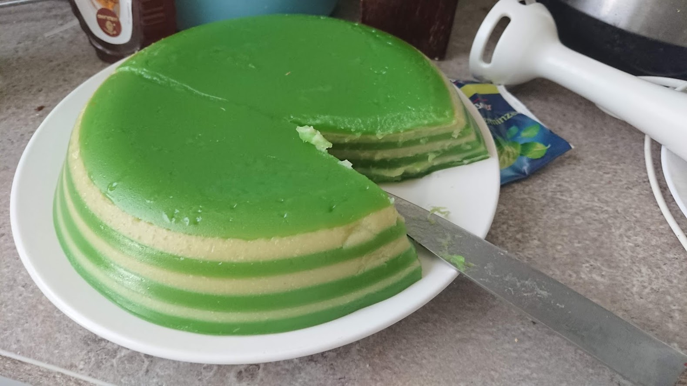
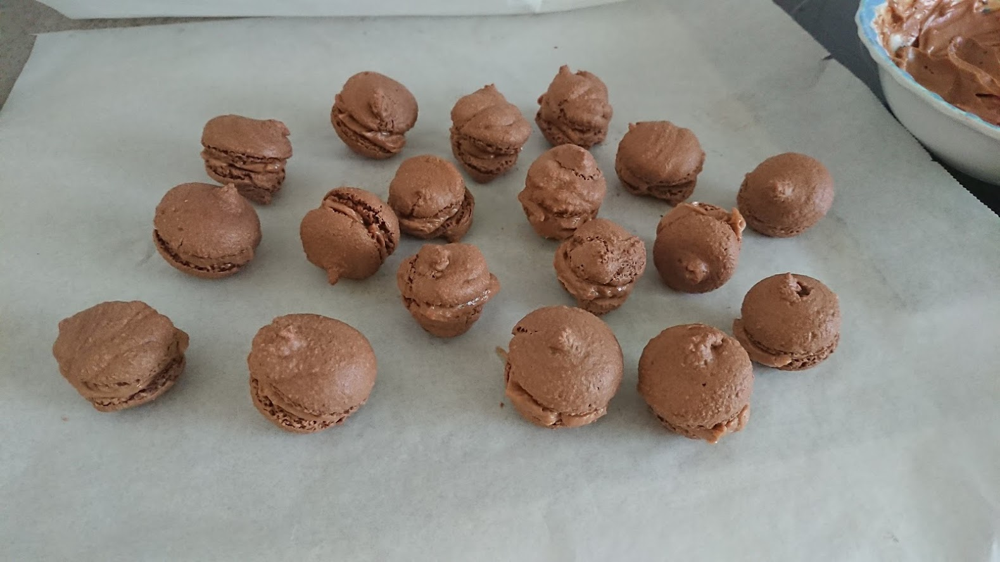
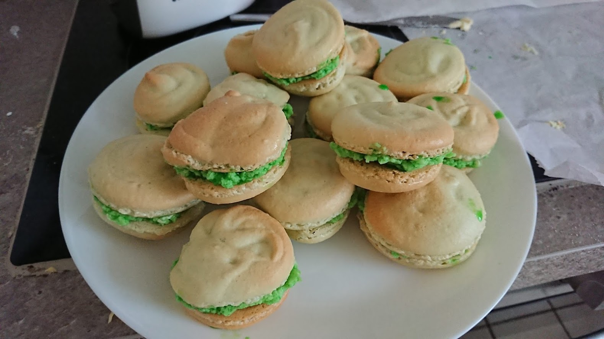
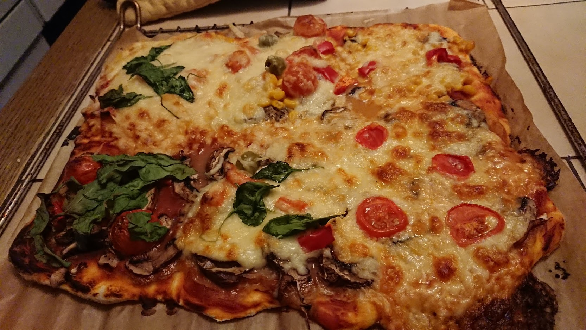
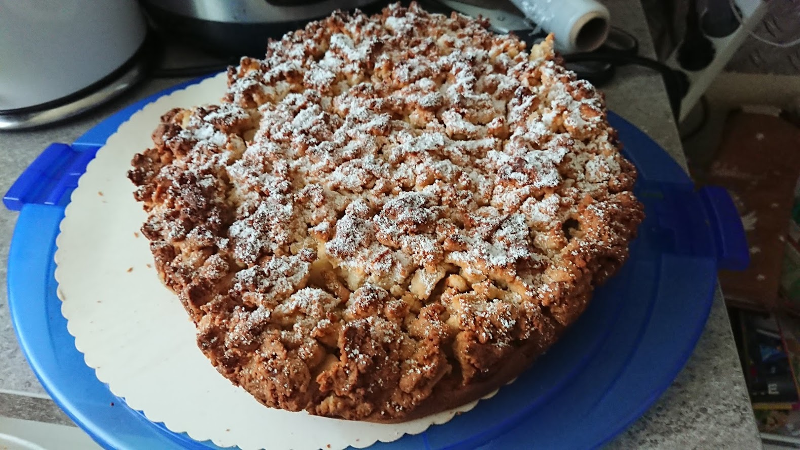

I'm not very good at baking but it's very fun! My baked products might not look very aesthetically pleasant but they taste better than they look!
Banh da lon

14.04.20: Actually baked by my mother. A vietnamese pastry made out of alternating mung bean and pandan layers.
Chocolate macarons

25.03.20: Still didn't manage to figure out the correct shape and they turned out not as soft as I wanted.
Pandan macarons

09.03.20: First time baking macarons. I used an American recipe which turned out too sweet. Adding pandan to the butter cream was also a bad idea as both ingredients didn't mix.
Pizza

22.12.19: Some pizza with friends. Each person received their own section to decorate it with toppings of their own choice.
Apple pie

22.12.19: A vegan apple pie. It's so easy and delicious that I already baked this one multiple times.